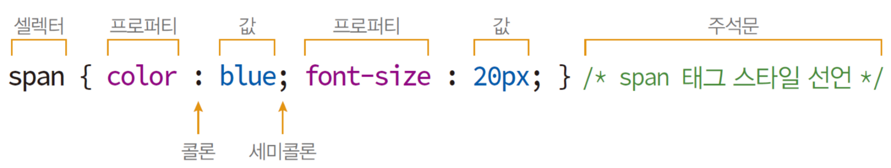
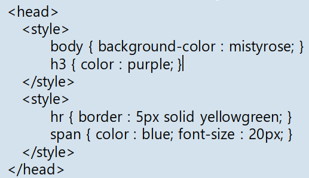
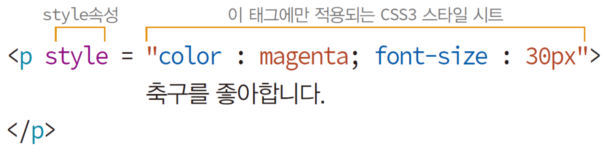
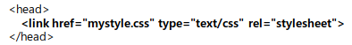

기본 구성
- 기본
- 셀렉터 : CSS3 스타일 시트를 HTML 페이지에 적용하도록 만든 이름
- 프로퍼티 : 스타일 속성 이름. 약 200개 정도의 프로퍼티 있음
- /*주석문*/

- <style>태그로 스타일 시트 만들기
- head태그 내에서 작성하는 방법으로 여러 번 작성 가능

- style 속성에 스타일 시트 만들기
- 태그의 style속성에 CSS3 스타일 시트를 작성하는 방법

- 외부 스타일 시트 가져오기(<link>태그)
- head태그 내에서 link태그를 이용해서 외부 스타일 시트를 가져오는 방법
